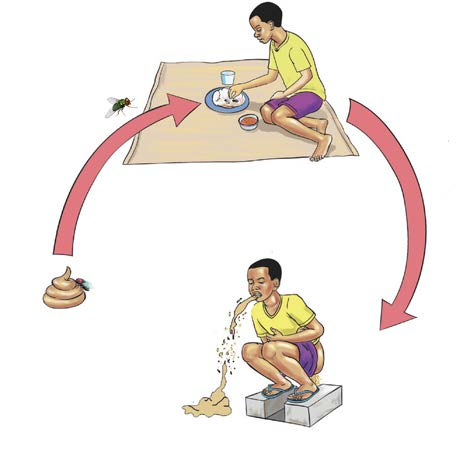

Housefly carrying cholera pathogen toward food or water
Faeces containing cholera pathogens
A person infected with cholera
Symptoms of cholera
Cholera symptoms include the following:
- (a) Continuous diarrhoea and vomiting;
- (b) Passing stool that looks like rice water;
- (c) Yellowish urine; and
- (d) General body weakness and loss of strength.
Prevention of cholera
Living in a clean environment and maintaining cleanliness is important. Eat clean and safe food, and drink clean and safe water. Always use the toilet and use it properly. Wash your hands with clean running water and soap after using the toilet and before eating. A person with cholera should be taken to the hospital or a cholera treatment centre immediately.